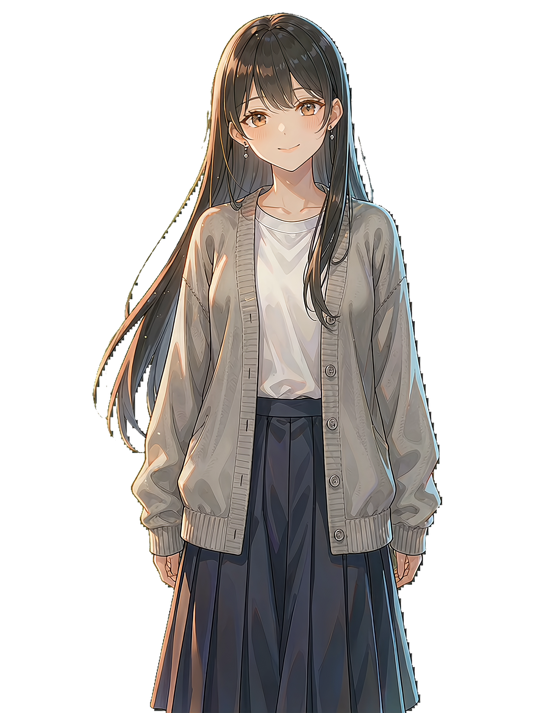

已接入 Pollinations 公共对话服务，联网后即可聊天，无需注册或填写 API Key。
聊天内容会发送给 Pollinations 处理。公共服务繁忙时可能排队或限制请求次数，稍后可以重试；角色互动和思政闯关也可以离线使用。
安卓 1.0.0 · 角色资源与题库随 App 安装。语音输入使用手机系统的识别服务；没有识别服务时可使用键盘语音输入。聊天记录和闯关进度保存在本机，卸载会清除。
在线甜声由 Microsoft Edge 语音服务生成，朗读文本会发送至该服务。开源组件说明
